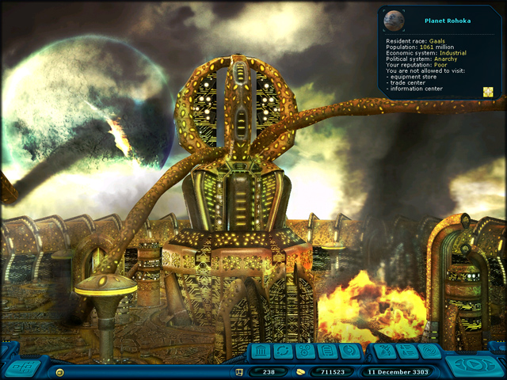
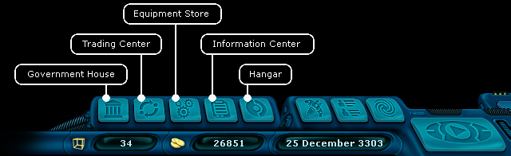

Ranger manual > Planet screen
|
Ranger manual > Planet screen
|
| Planet screen After the landing you will see the screen with the open view of the current planet. In the bottom right corner you will see a small window with the information on the race inhabiting this planet, its political and economic system, amount of population and the overall attitude of the planet to the ranger. |

| The amount of population on the planet affects the amount of goods in the trading center
and the equipment in the store. The economic type of the planet determines the price level for the goods:
• Agricultural - low prices for the wholefood, medicaments and alcohol. • Mixed - medium prices for all goods. • Industrial - low prices for machinery and luxury items. The political system affects the legitimacy of some goods, e.g., drugs and alcohol. The political system can be one of the following: • Anarchy • Dictatorship • Monarchy • Republic • Democracy The relationship of the planet to you determines a lot of things. You can only receive special government quests, only if the attitude grades from good to excellent. If the attitude to you is bad, you won't be able to trade, buy equipment or use the Information Center. However in order to redeem your reputation, you can bribe an official in the governmental building. It will hardly help, if the attitude to you is more than bad, you even can get to jail, so you have enough time to think over your behavior. :-) In the planet mode the following additional buttons appear over the main navigation panel: |

| Governmental building
(G) - get a government mission, buy a star map, oil
palm for better relations. Equipment Store (E) - buy equipment. Trading Center (T) - buy/sell goods for transportation. Information Center (I) - find out the latest galaxy news, use the database search. Hangar (H) - refuel, takeoff from a planet. |